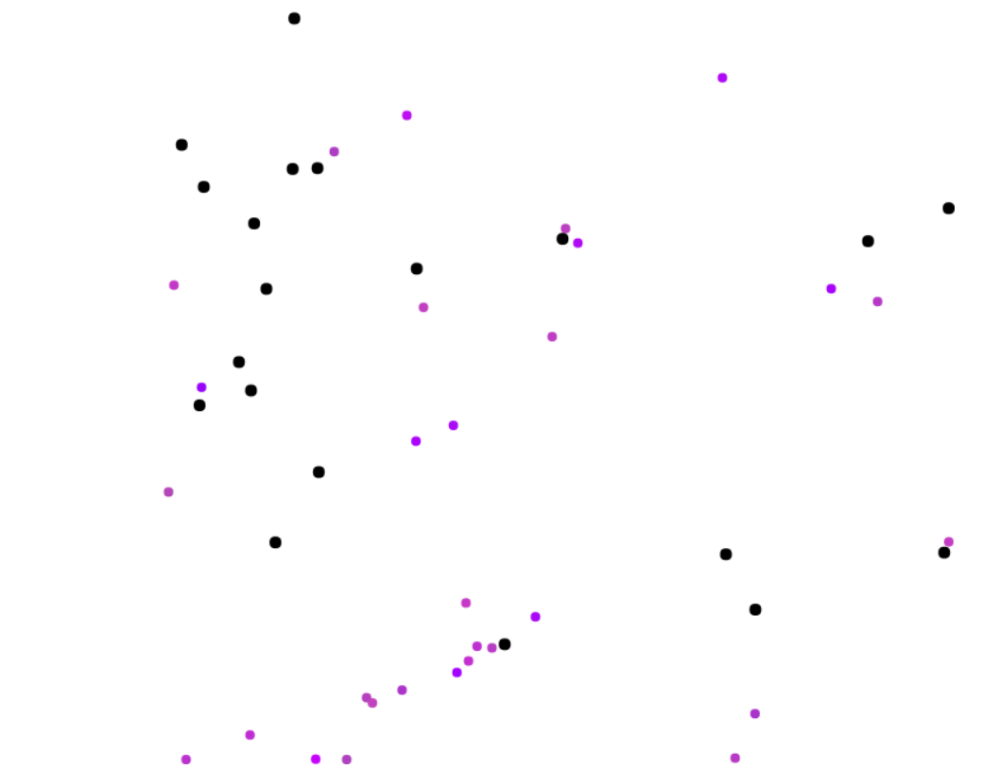
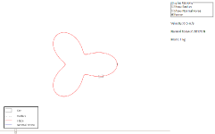
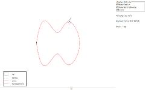
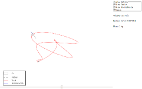
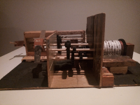
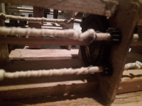
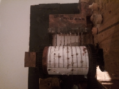
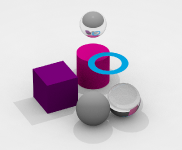
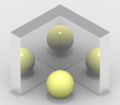
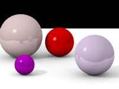

This is a simple AI project with hunter particles attempting to eat food particles and food particles escaping. The AI controls the speed and orientation of the predator particles but excessive speed comes with the price of reduced fitness from wasted energy. The AI is optimized using a simple genetic algorithm in which unfit hunters are discarded and replaced with children of fit ones. The particles start exhibiting interesting behavior around the 30th generation.



I built a simulation of a slot car moving in a track. The track path is made by a matlab function using cubic splint and paramtetic spline. The track physics is simulated in javascript for an interactive application.



I built a music box from scrap wood and rubberbands, inspired by the inventor Akihiko Isaka's governor. The rubber bands are attached to a governor that controls that speed of the music box using air resistance. The cylinder was built by cutting mahogany using a circular saw and gluing them to form a 3" long cylinder. The notes are built from a rake's teeth that I cut off and filed down to their specific notes.



Built a raytracer from scratch based on the book Physically Based Rendering by Matt Pharr. The code was built on abstract classes to allow high customizability and uses a custom built Math library. I started the project to test new raytracing technique such photon mapping and multithreading techniques invloving CPU and GPU.